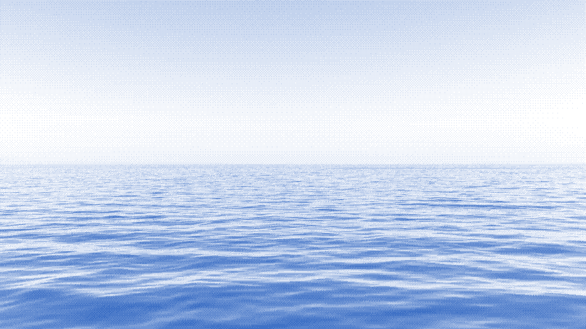
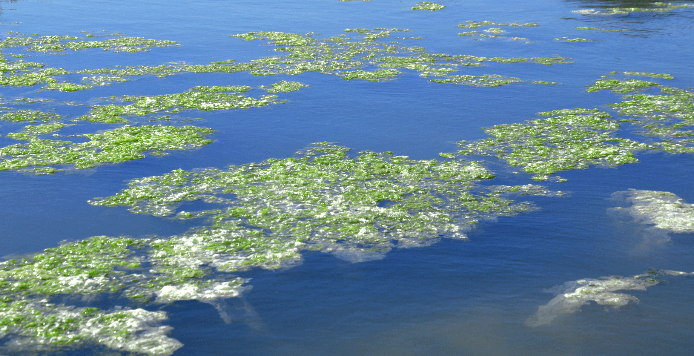
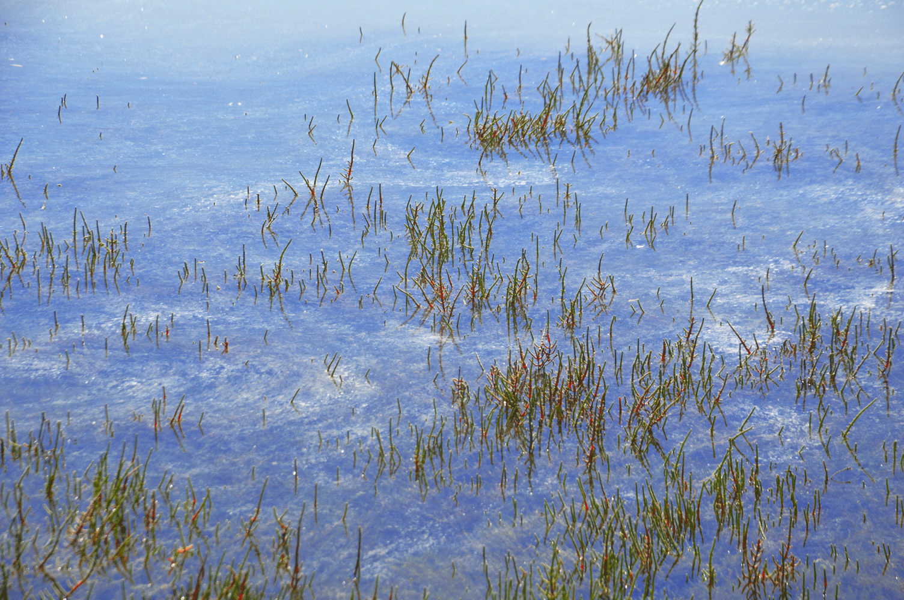

Economía azul
Vivimos en un momento en que cada vez somos más conscientes de nuestra relación con el planeta y de cómo esta puede influir en el futuro tanto de la Tierra como de la población que la habita. Esta conciencia también se extiende a la conciencia medioambiental, que cada vez está más presente en todos los aspectos de nuestra vida, en respuesta a los desafíos que van surgiendo, como la contaminación por plásticos y microplásticos en mares y océanos. Estos problemas han despertado una alerta global: hay que transformar nuestro modelo económico actual, si queremos mantener al planeta con vida. En este contexto, surge la economía azul: una respuesta esencial para poder llevar a cabo las actividades vinculadas al mar y a la costa, de manera sostenible.
Descubre qué es la economía azul
La economía azul es el conjunto de actividades económicas que utilizan de manera sostenible los recursos marinos y costeros. Trasciende la forma tradicional de trabajar el mar y la costa (pesca, transporte y turismo): incluye sectores emergentes como energías renovables oceánicas, biotecnología marina, producción de algas y plantas halófitas, etc. Este enfoque no solo busca el crecimiento económico, sino que también integra la protección ambiental, la inclusión social y la economía circular.
“La economía azul circular no es una utopía, es una necesidad para el planeta y los que lo habitamos.”
Economía azul y economía circular: dos caminos que se cruzan
Durante décadas, nuestra economía ha seguido un modelo lineal basado en extraer materia prima, producir productos para vender, consumir dichos productos y desecharlos, generando un impacto insostenible en los ecosistemas. Frente a esto surge la economía circular, que propone que el proceso no sea lineal, sino que se cierren los ciclos de los materiales, minimizando residuos y revalorizando los recursos.
La economía azul solo es posible con circularidad. ¿Por qué? Porque los océanos no tienen capacidad infinita de asimilación de residuos. La única forma de evitar la degradación de los ecosistemas marinos, es gestionar de forma circular los materiales, productos y energía que provienen del mar y las costas.
Algunos ejemplos de la unión de economía azul con economía circular:
- Pesca responsable y gestión de residuos marinos, con prácticas como la recogida de redes fantasmas o la reutilización de subproductos pesqueros.
- Producción de alimentos basada en algas y microalgas, como fuente alternativa de proteína vegetal, que reduce la presión sobre la agricultura y la pesca tradicional.
- Desarrollo de energías marinas renovables, como la eólica offshore, que contribuyen a la descarbonización de la economía.
- Turismo costero sostenible, basado en la valorización del patrimonio natural y cultural sin comprometer su conservación.
- Infraestructuras verdes, como marismas restauradas que actúan como barreras naturales contra tormentas y como sumideros de carbono.
Nuevos alimentos azules: el caso de la salicornia
Dentro de esta transformación, emergen alimentos innovadores con gran potencial ecológico y nutricional. Uno de los más prometedores es la salicornia, una planta halófita que crece en terrenos salinos, y que no necesita prácticamente agua dulce para prosperar. Su riqueza en fibra, minerales como el magnesio o el potasio, antioxidantes y compuestos bioactivos la convierte en un ingrediente funcional, ideal como sustituto vegetal de la sal y como base para complementos nutricionales. Además, su cultivo puede integrarse dentro de proyectos de restauración ambiental, actuando como infraestructura viva que protege la biodiversidad y captura carbono. Así, la salicornia encarna perfectamente el espíritu de la economía azul circular: sostenible, regenerativa e innovadora.
Más allá de los límites del modelo lineal
Es fundamental abandonar la visión obsoleta de que la protección ambiental es un obstáculo para el crecimiento económico. En la economía azul, medio ambiente y economía no son opuestos, sino interdependientes. No hay un único camino hacia la circularidad en el sector marítimo, pero sí un principio claro: incrementar paso a paso el grado de circularidad en cada actividad económica relacionada con el mar. Alimentos como la salicornia o las algas, prácticas regenerativas costeras para poder conservar los ecosistemas cercanos al mar, energías limpias y conocimiento compartido son solo algunas de las piezas que, juntas, pueden dibujar un modelo económico más resiliente. La economía del futuro se basa en la interseccionalidad y en la capacidad de producir de forma consciente y generar riqueza no solo para la economía sino también para el planeta.
El mar puede ser fuente de riqueza, innovación y bienestar. Pero solo si lo cuidamos, si lo entendemos como un socio y no como un recurso ilimitado.